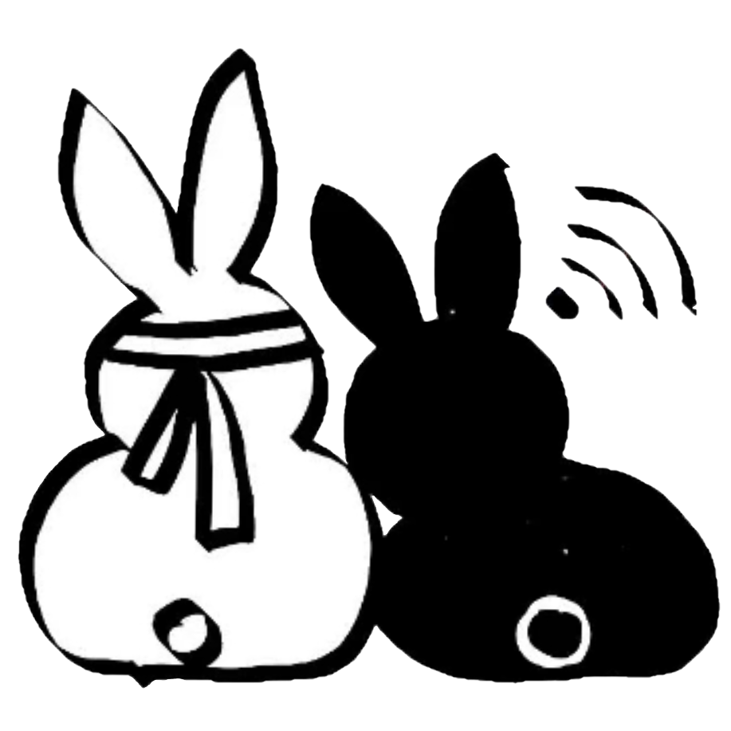
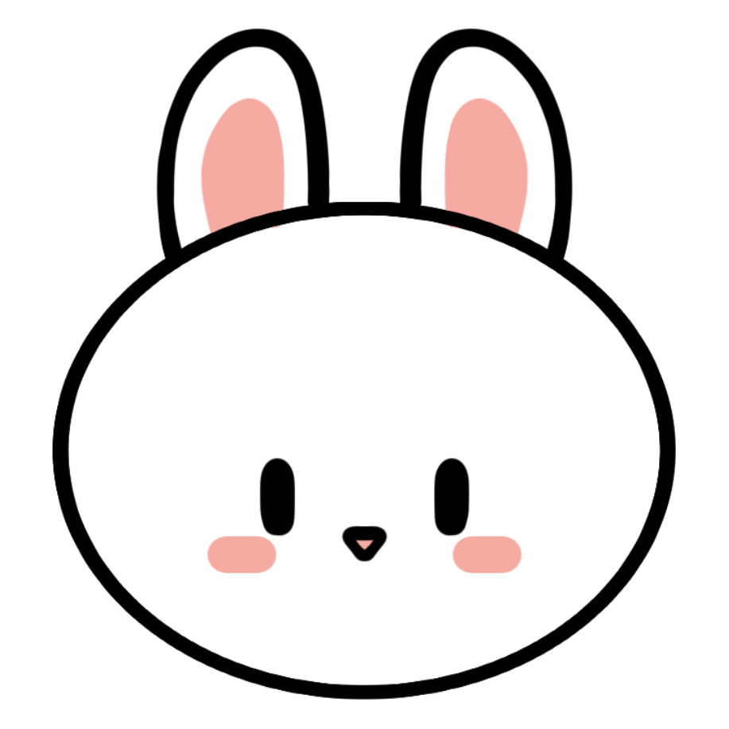

本指南介绍正在准备的分享版功能。请以下载包中的指南和该版本发布说明为准。

让他们住进你的桌面。
走走、对视，再抱一会儿。一个陪你读书、画画和工作的双人桌宠。
Windows / Linux / macOS · 分享版使用说明（发布前预览）
非官方同人桌宠。本包为测试版，请先完整解压，再运行程序。请先关闭旧桌宠，再启动此包。
01 / 第一次打开
Windows
- 将整个 ZIP 解压到一个准备长期保留的文件夹。
- 双击
CPPet.exe或run.cmd。请把CPPet.pck与 EXE 放在一起。 - 想放到桌面？运行
create-shortcut.cmd，它会创建带双兔图标的快捷方式。
无需安装 Godot，也无需管理员权限。移动或更新程序文件夹后，重新运行快捷方式助手。
Linux / Ubuntu
- 完整解压，在文件夹内运行
./run.sh。 - 如果提示没有执行权限，运行
chmod +x run.sh CPPet.x86_64后再试。 - 需要桌面／应用菜单入口时，运行
python3 create-shortcut.py。GNOME 若提示，右键快捷方式选择「允许启动」。
当前目标为 X11 或 GNOME Wayland 下的 XWayland；启动脚本会选择 X11。
macOS（实验版）
解压后打开 .app。可在 Finder 中「制作替身」，再将替身放到桌面。
此平台尚无实机验收，应用未 notarize，系统可能阻止打开；请勿为此关闭系统整体安全保护。当前不承诺 macOS 正常运行。
02 / 把鼠标移到他们身上
拖动与右键
左键按住角色即可拖动，松手后回到底部。右键任一角色，打开操作菜单。
菜单里可以暂停／继续、重置位置、设置大小、选择互动、隐藏或退出。右键 → 帮助 → 使用指南，可再次打开本页。
按你的习惯来
设置 → 角色大小：100%、125%、150%、175%、200%。小屏幕会限制实际大小。
设置 → 自动互动：关闭后只在你手动选择时互动。
大小、暂停和自动互动开关会保存。放大不会改变动画帧率或两人的身高差。
03 / 怎样让他们互动？
先让魏无羡在左、蓝忘机在右，两人都落地，靠近一些。当前画稿只支持这个方向；双方需要空闲且没有暂停。位置不合适时，互动菜单会说明原因。
自动发生
开启自动互动后，满足条件时从当前可用互动中随机选择。处于冷却的动作不会被抽到。
自己选择
右键角色 → 互动 → 对视／拥抱。手动选择也遵守站位、空闲、间隔和冷却规则，不会打断另一段互动。
| 互动 | 同一动作的冷却 | 所有动作之间的间隔 |
|---|---|---|
| 对视 | 30 秒 | 5 秒 |
| 拥抱 | 30 秒 |
- 每个动作分别计时。拥抱不会让对视也进入 30 秒冷却，反过来同样如此。
- 自动和手动触发采用相同计时；从动作完成或取消时开始。
- 拖动、打开菜单、暂停、隐藏、重置位置或调整大小会取消正在进行的互动，并让刚才的动作进入自己的冷却，同时开始短间隔。
- 条件不满足、没有真正开始的请求，不产生冷却。
- 暂停、打开菜单或隐藏时，冷却继续计时。恢复前，角色不会自己互动。重启程序会重新开始本次运行的冷却记录。
例如：拥抱结束后，若对视本身没有冷却、站位也合适，最早 5 秒后可对视；再次拥抱则需要等待 30 秒。按钮会显示「冷却」或「间隔」倒计时。
04 / 想让桌面清静一会儿

右键角色 → 隐藏桌宠
两人消失，屏幕右侧留下这只白兔。没有倒计时，也不会自动回来。按住白兔用左键拖动，可把它放到主屏内喜欢的位置；本次运行中会记住位置。
右键白兔 → 显示桌宠，两人就会回来，保持原来的暂停状态。也可在白兔菜单里选择「退出桌宠」。
05 / 遇到问题
怎么关闭？重新打开后不走动？
右键角色或白兔，选择「退出桌宠」。暂停状态会保存；如果角色没有活动，右键选择「继续活动」。请避免同时打开多个副本。
互动按钮灰了，或者一直没互动？
先看按钮旁边的原因。确认魏左蓝右、两人靠近且已落地、未暂停；自动模式还需要开启「自动互动」。冷却和短间隔结束后按钮会自动恢复，不用反复重开菜单。
桌宠太小／太大，或者快捷方式失效？
优先用桌宠自己的大小设置；操作系统的显示缩放会影响整个桌面。移动解压文件夹会使旧快捷方式失效，重新运行包内的快捷方式助手即可。
怎样反馈问题？
记录系统版本、显示缩放、桌宠大小、触发步骤和预期／实际表现。Windows 可运行 diagnose.cmd，收集其窗口提示位置中的 pet.log 和 telemetry.json；发送前可先检查日志内容。
详细验收步骤在包内 TEST_CHECKLIST.md。请把本页底部构建编号一并提供给作者。